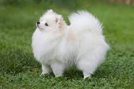

Overview
The Pomeranian (also known as a Pom or Pommy) is a breed of dog of the Spitz type that is named for the Pomerania region in north-west Poland and north-east Germany in Central Europe. Classed as a toy dog breed because of its small size, the Pomeranian is descended from larger Spitz-type dogs, specifically the German Spitz. The breed has been made popular by a number of royal owners since the 18th century. Queen Victoria owned a particularly small Pomeranian and consequently, the smaller variety became universally popular. During Queen Victoria's lifetime alone, the size of the breed decreased by half. Overall, the Pomeranian is a sturdy, healthy dog. The most common health issues are luxating patella and tracheal collapse. More rarely, the breed can have Alopecia X, a skin condition colloquially known as "black skin disease". This is a genetic disease which causes the dog's skin to turn black and lose all or most of its hair.[1] As of 2017, in terms of registration figures, since at least 1998, the breed has ranked among the top fifty most popular breeds in the United States, and the current fashion for small dogs has increased their popularity worldwide.
Characteristics
- Alert and intelligent
- Pomeranians are easily trained and make fine watchdogs and perky pets for families with children
- Feisty, loyal and playfu
- Fun and affectionate nature
Care
Pomeranian Care. Pomeranians need consistent training and regular exercise to be happy, healthy dogs. Their thick coat also requires a fair amount of upkeep. Plus, owners must be cautious about Pomeranians in hot weather, as well as with predators and any rough encounters with people or other pets.The Pomeranian has a long, thick double coat that requires frequent grooming. Plan to brush your Pom's coat at least weekly to remove loose fur and prevent tangles and mats. Poms also typically go through heavier seasonal sheds as the weather changes in the fall and spring, during which you'll likely have to brush multiple times a week to keep up with the loose fur.They do well with other pets and love attention. They are great companions for older people because they do not require lots of outdoor activity and are great at alerting for danger by barking. Their long, fluffy coat requires regular upkeep and grooming. They can also have health problems commonly found in the breed, including dental disease, tear duct issues, trachea collapse, cataracts, and hip and joint problems.